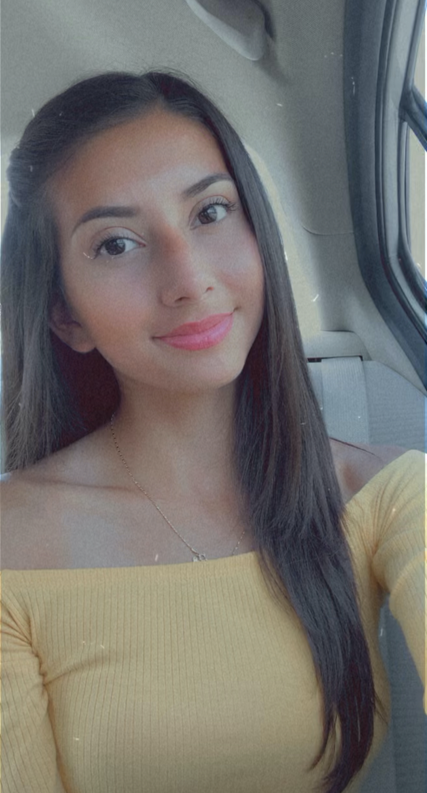
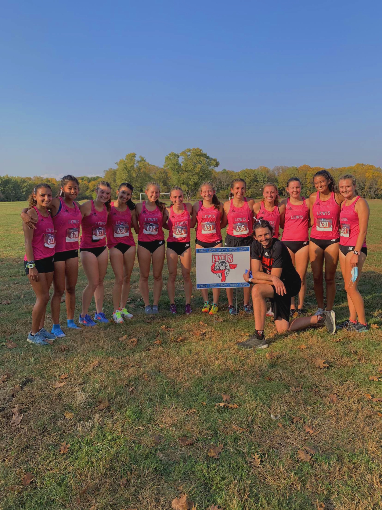

Day
Hello, my name is Dayanna Sanchez (aka Day)! Welcome to my website that I'm developing for my Computer Science course that I'm taking at Lewis University. Well let's get to the point, who am I? I come from a family of five, and I'm the middle child of three. I'm an amitious person who is always attempting to achieve more after conquering one of my goals. I'm an outgoing person who is willing to speak to anyone. I'm also caring and helpful towards my community. During high school, I actually did over 400+ hours of community service and I could tell you every time I helped at a community event, I developed many skills like leadership. I'm a Freshmen at Lewis University who will be majoring in Mathematics and Secondary Eduction! You're probably asking with a disgusted face expression why I selected math, and your facial expression is the reason why. I want to change people's attitudes towards math by becoming a high school teacher in this particular subject because I know many dislike and fear math due to how tedious it can get. I can tell you that those feelings for myself are still there, but the growth in my attitude and confidence over the years has changed dramatically. Another thing about me that I'm a part of the Women’s Cross Country and Track and Field team at Lewis University (GO FLYERS!!!), as well as the PUMA-STEM Mentorship Program. These are some quick facts about me, but if you would like to know more about me, contact me through my email found above!
My favorite hobby is running! Running has been a great stress reliever for me every day as a student. Additionally, it’s my favorite hobby because it has allowed me to discover things about myself that I was never aware of before. For instance, I never thought I would be running a sub-6 mile or sub-20 three-mile. For others, these times might be considered slow, but for someone who began running their sophomore year of high school, I think I’ve made great improvements in such a short amount of time. I also enjoy this hobby because it has allowed me to meet many runners from different states and meet my newest family, Lewis Women’s Cross Country and Track and Field team. Lastly, running is my favorite hobby because I have the opportunity to enjoy beautiful sceneries as I go on my runs. Running is not just my hobby, but it’s also my passion that has provided me with many opportunities!
I can run 10 miles without stopping! Also, I enjoy running the 800-meter and 400-meter event for track!